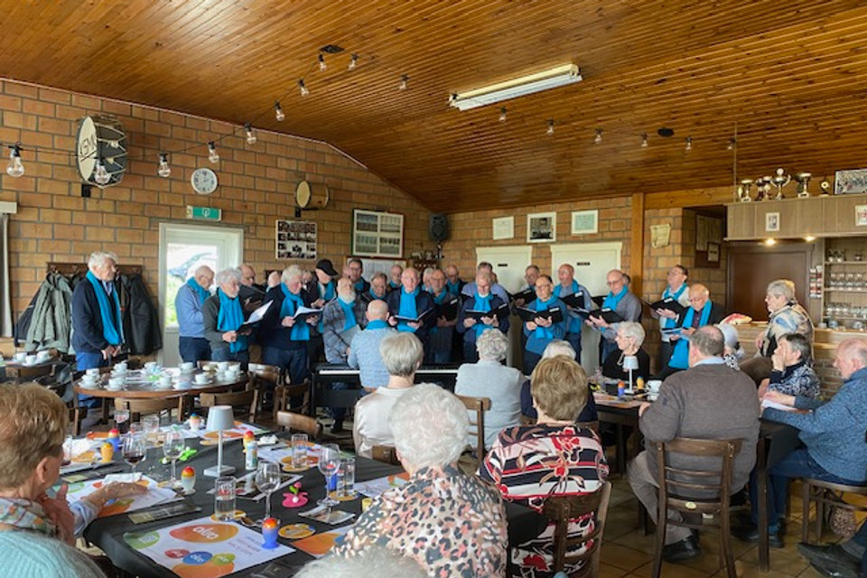
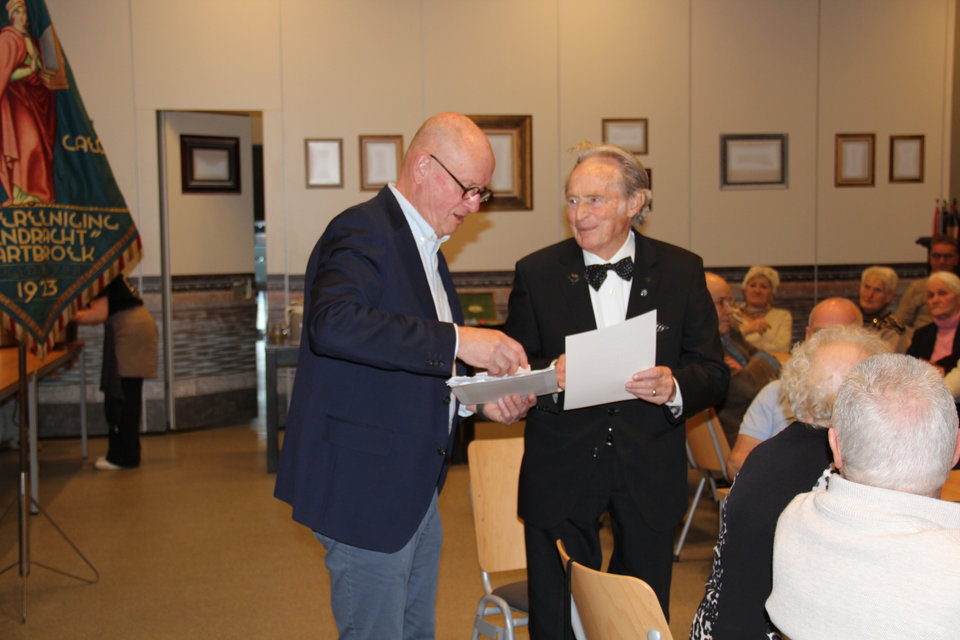
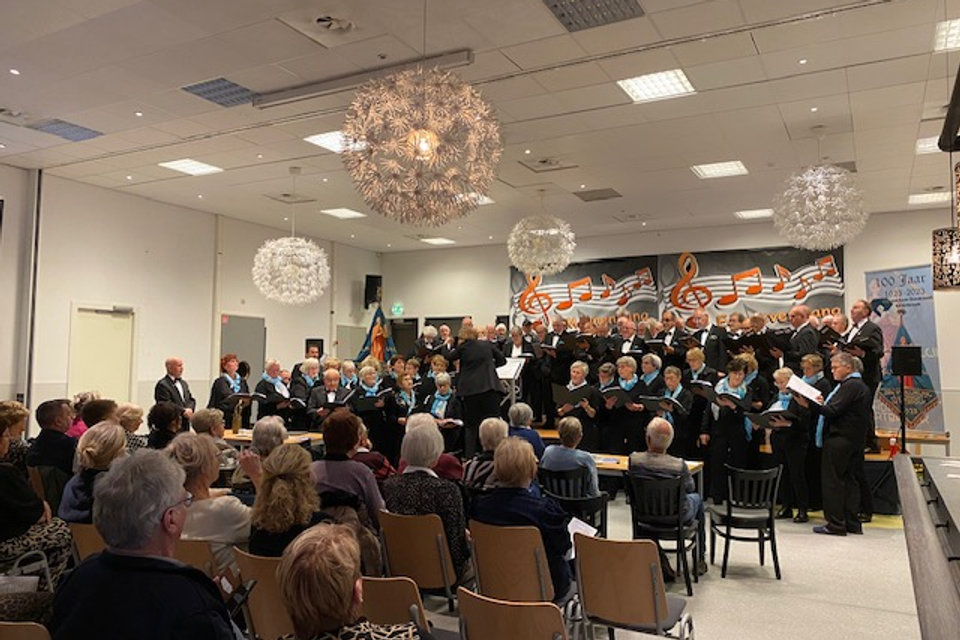
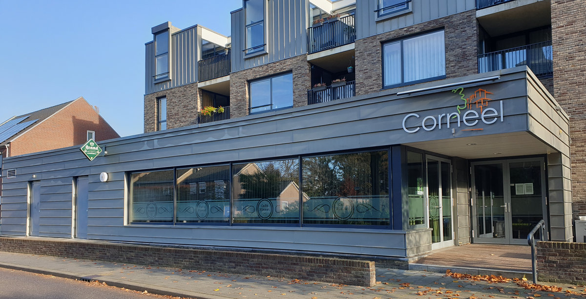

27 maart 2026
Optreden in Kessenich
Op uitnodiging van de ouderenvereniging zongen we klassiek, modern, Nederlands en Limburgs. Het publiek zong vrolijk en uitbundig mee.
Lees verder →1923
Opgericht
43
Zingende leden
206
Liederen in de bibliotheek
10
Dirigenten in honderd jaar
Welkom
Welkom op de website van Mannenkoor Eendracht uit Swartbroek. Tijdens het jubileumconcert ter gelegenheid van ons 100-jarig bestaan, op 17 december 2023, reikte burgemeester Vlecken van Weert de Koninklijke Erepenning uit aan het koor.
Op deze website vindt u informatie over het koor, onze geschiedenis, de leden en onze activiteiten. Heeft u vragen? Neem dan gerust contact met ons op.
Namens Mannenkoor Eendracht,
Het Bestuur
Actueel

27 maart 2026
Op uitnodiging van de ouderenvereniging zongen we klassiek, modern, Nederlands en Limburgs. Het publiek zong vrolijk en uitbundig mee.
Lees verder →
22 november 2025
Middelpunt van het Ceciliafeest: Lei vierde zijn zeventigjarig lidmaatschap en werd benoemd tot erelid van het koor.
Lees verder →
26 oktober 2025
Een volle zaal, gemengd koor Con Amore uit Baexem en de 14-jarige trompettist Robin Peeters als gasten.
Lees verder →Repetities
We repeteren wekelijks op woensdag van 20.00 tot 22.00 uur bij Bi-j Sanne in Swartbroek (voorheen café Plexat). Rond 21.00 uur is er pauze, en om 22.00 uur begint de spreekwoordelijke derde helft.
Wilt u een keer komen luisteren of meezingen? Loop gerust binnen, of maak een afspraak met onze voorzitter.
